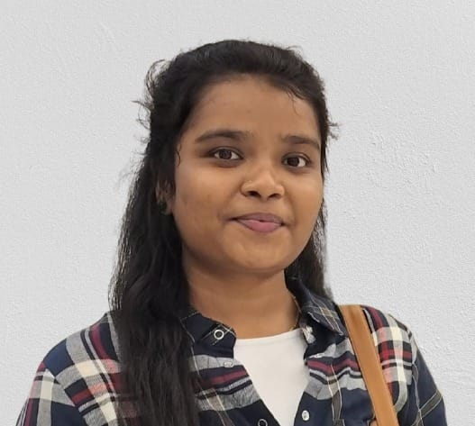

Yazhini Karunanithi

Summary
Aspiring Front-End Developer with strong skills in HTML, CSS, and JavaScript. Bringing a background in IT support and process management with proven problem-solving, adaptability, and teamwork. Eager to build responsive, user-friendly web applications and contribute to innovative development projects.
Education
- B.Sc Biotechnology | Sathyabama Institute of Science and Technology, Chennai | 2021 – 2024
Work Experience
- Process Executive | Cognizant Technologies
Sept 2024 – Present
- Delivered Level 1 support for a B2B SaaS product, focusing on user account management.
- Logged and resolved incidents using ServiceNow, handled ticket queue via 8×8 tool.
- Conducted product demos and collaborated with cross-functional teams to enhance service quality.
- Gained hands-on experience in problem-solving, client communication, and process management.
Skills
- Web Development: HTML5, CSS3, JavaScript (ES6)
- Version Control: Git, GitHub
- Other Technical Skills: Linux basics, Shell Scripting, Cloud & Virtualization basics
- Soft Skills: Time management, Problem-solving, Team collaboration
Certifications
- TCS NQT – 76%
- IT Infrastructure Services
Other